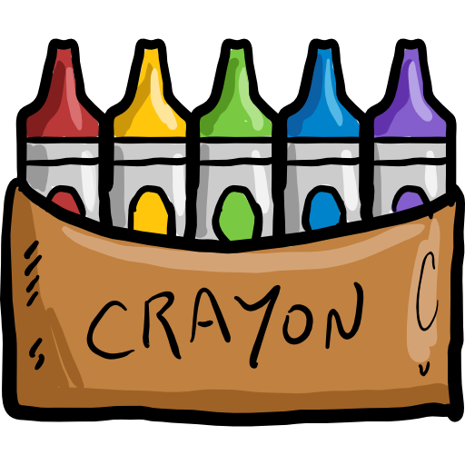

Oxford
Libreta European Book A4
5.20 €

El clásico bolígrafo Bic Cristal con tinta base de aceite. Escritura suave y fluida garantizada hasta 2 km de trazado. Cuerpo transparente para ver el nivel de tinta y capuchón ventilado. Ideal para el colegio, la oficina y el día a día.